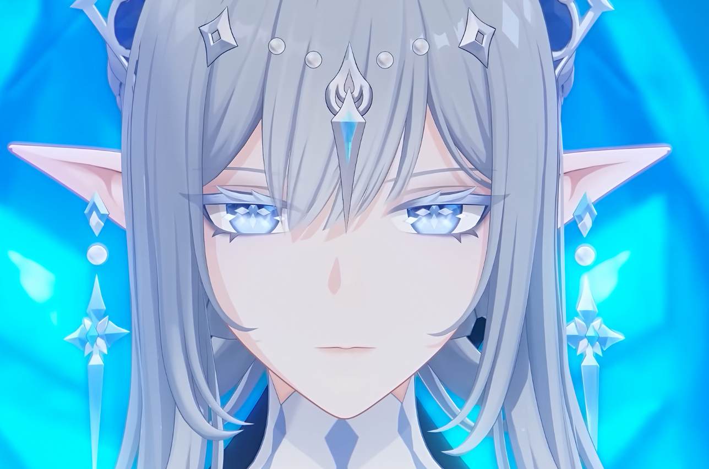
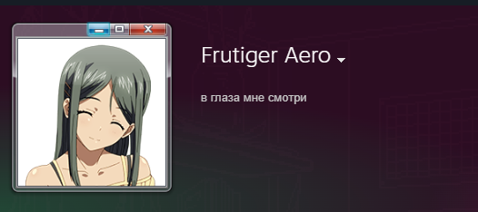

Верховная Мать
досье на одного мужчину
Кто тебе Шериф?
Зорра, садись. Двадцать пять вопросов, пять минут, и наука наконец скажет, кем является этот человек из твоего войса: пёсиком, симпом, лошком, куколдом или всё-таки шерифом.
- 25 вопросов, честных и неудобных
- 6 шкал: от длины поводка до запаса хребта
- 36 возможных диагнозов, включая смешанные породы
Шериф проходил свою версию этого теста: он выбирал не про себя, а то, как ему самому больше нравится. После твоего ответа будет видно, что выбрал он, и иногда он там ещё и комментирует.

Испытуемая: Зорра
Сербия. Дискорд. Смотрит в глаза.
Отвечай как есть. Он всё равно не узнает. Наверное.
вердикт вынесен
Шкалы Шерифа
Процент от максимума, который он мог набрать по каждой шкале в этом тесте.
Форма личности
Те же шкалы, только видно перекос.
Приборы
Три главные цифры, крупно.
Censored личность
То, как Шерифу нравится, когда Зорро себя ведёт. Раздел закрыт.
Что тебе разрешено
Подписано Шерифом заранее и не глядя.
Характеристика
Зелёное - за что держишь. Красное - за что хочется выгнать.
печать Верховной Матери